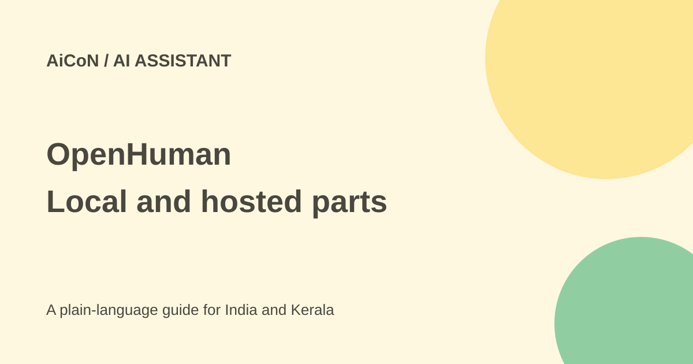

OpenHuman: local memory is not fully offline
OpenHuman is an open-source desktop assistant from TinyHumans. Its memory and runtime data can live on your computer, but the default setup still uses hosted services. Local-first does not mean every part is offline.

What does it offer?
The official README describes connected apps, a local memory database, research and workflows that users review on a canvas. Saved workflows can run on triggers, with approval gates for side effects. These are the developer's descriptions, not an independent audit.
The software is GPL3 and in early beta. The getting-started guide lists macOS, Windows and Linux, recommending at least 4 GB RAM or 16 GB for very large mailboxes, repositories or local models.
Where data goes
The guide says the Memory Tree database, Markdown vault, workspace configuration and local runtime state stay on the machine. The default setup still uses hosted sign-in, model routing, managed integration OAuth/tool calls and web search proxying.
The README describes Privacy Mode as stopping inference from leaving the machine. That is narrower than a promise that every connected service works without internet. Some hosted features and real-time triggers still require the managed backend. Read the custom setup paths if you want your own model, search or integration credentials.
How to start with less access
- Read the official guide, licence and beta warnings.
- Back up the computer and use a non-sensitive sample workspace.
- Choose local or hosted inference intentionally, checking hardware and data terms.
- Connect only one low-risk account and inspect the exact OAuth permissions.
- Review the memory it creates. Do not assume every summary is correct.
- Try a draft-only workflow and review its canvas before saving.
- Keep sending, deleting and spending behind review. Recheck any scheduled or event-triggered run.
- Find the disconnect and deletion controls before adding a main inbox or workplace system.
Free software and uncertain managed pricing
OpenHuman's software is open source and free. A hosted model or managed service may cost money. The current TinyHumans pricing page lists a Basic plan at US$20 monthly, about ₹1,929 at the approximate ₹96.43/USD rate used for this review, before fees or taxes.
However, that page describes OpenCompany, Medulla and API credits, not a clearly labelled OpenHuman checkout. Do not treat it as a verified OpenHuman-specific quote. Confirm the product and included services in the actual account screen before buying. The pricing page states payments and credit purchases are non-refundable.
For Indian users
Do not connect an employer's inbox without permission. Local storage still needs device security and backups. Check the hosting and data rules of the model you select; no India-only processing promise was established.
What changed since the original post?
We added the official guide's local/managed split and flagged that the current pricing page names other TinyHumans products. The earlier simple monthly-price claim is not enough to quote an OpenHuman plan today. No account was connected.
Frequently asked questions
Is it completely offline by default?
No. The guide lists several hosted default services.
Does Privacy Mode mean all features work locally?
No. It concerns inference; some features still need the managed backend.
Is it ready for sensitive work?
It is early beta. Test carefully and follow your organisation's rules.
Sources: OpenHuman product · Official repository · Getting-started guide · Current TinyHumans pricing · Approximate exchange-rate source · Actual GPL licence. Checked 7 October 2026.